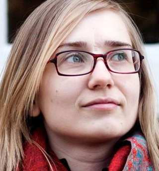
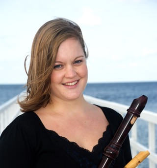
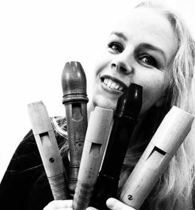
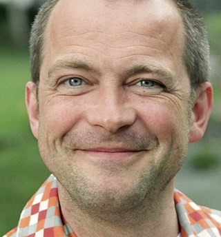
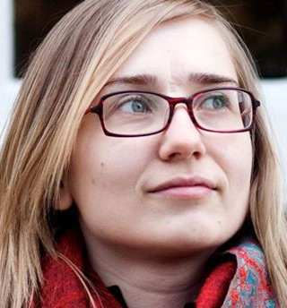
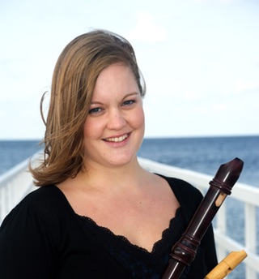
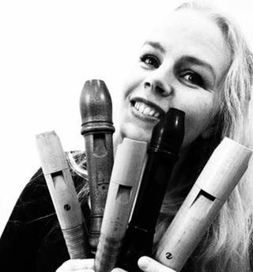
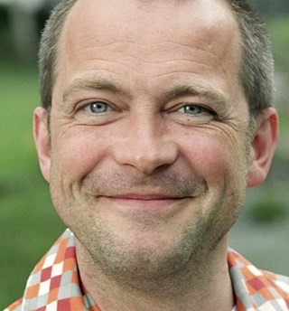

Sommarkurs 11-14 augusti 2016
Fyra dagars sommarkurs på vackra Glimåkra folkhögskola i Skåne, med blockflöjten i centrum!
Ensemblespel i olika form, masterclasses, workshops, teknikpass, konserter, bad och lägeraktiviteter. En ensemblekurs (från 12 år) och en solokurs (begränsat antal platser).
Du får undervisning och inspiration av erfarna blockflöjtister och pedagoger: Pia Loman, Annie Lönngren, Sofia Nelson, Emelie Roos samt årets gästlärare Dan Laurin (solokurs).
 








Plats: Glimåkra Folkhögskola
Tid: 11-14 augusti
Kursavgift inkl. mat och logi i dubbelrum: 1850 kr. Betalning görs till föreningen Flautissimo på bg: 5826-8871. Ange GB16 samt elevens namn! För övriga frågor om inackorderingen kontakta Glimåkra folkhögskola 044 - 44 800
Anmälan är nu stängd. Anmäl dig här.
Medlemmar i Föreningen för Tidig Musik får 150 kr rabatt på kursavgiften!
Välkommen med din anmälan! Vi ses i sommar! Pia - Annie - Sofia - Emelie (SIRA) & Dan
Kontakt: glimakrablockflojtsdagar@gmail.com